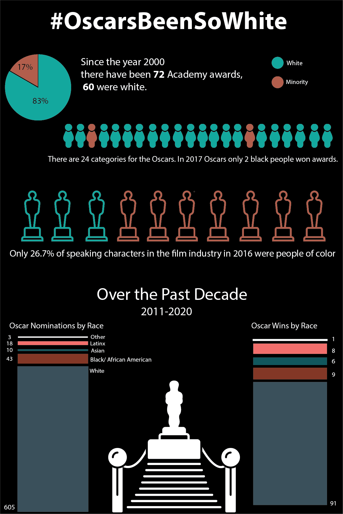

My Portfolio
The Visual Designs

Infographic
Infographic on Diveristy at the Oscars created with Adobe Illustrator.

Poster
Call to Action Campaign Poster created with Adobe Illustrator for the Shennahdoah Valley Black Herritage Project.

Brochure
A brochure Mockup up for The Shennahdoah Valley Black Herriatge Project created in Adobe InDesign
The Web Designs

Wireframe
A wireframe created of the JMU sports home page

Wireframe Re-Design
The wireframe re-design for the JMU sports home page

Site Map
A site map created for the JMU sports home page

Site Map Re-Design
A site map re-design created for the JMU sports home page